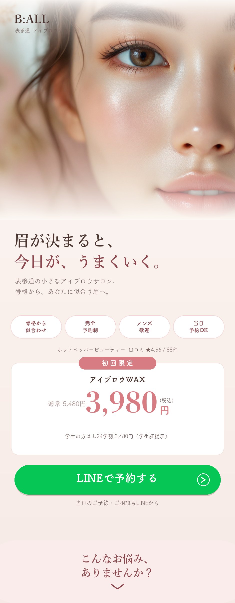
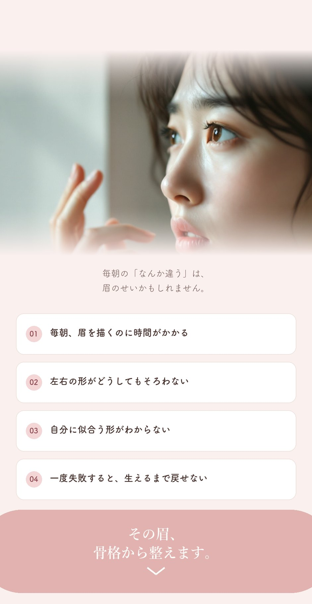
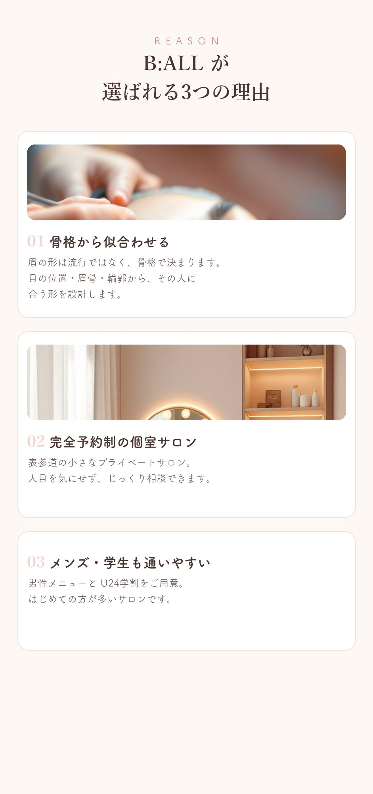
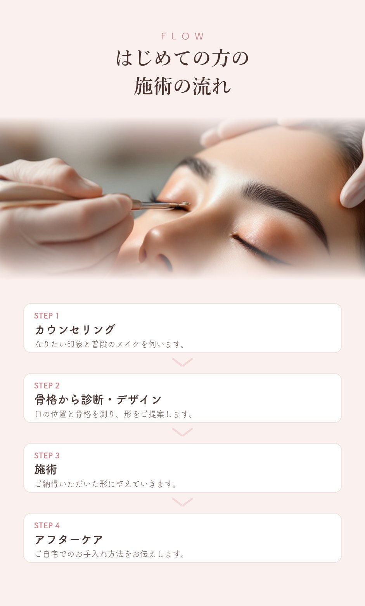
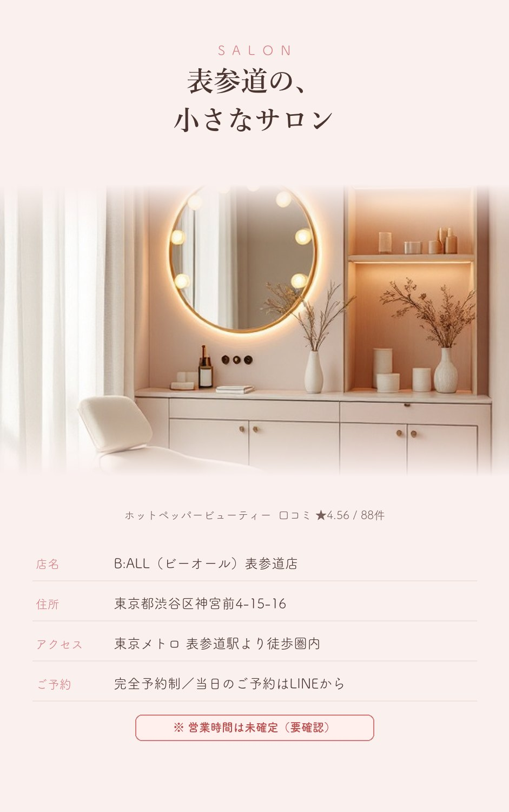
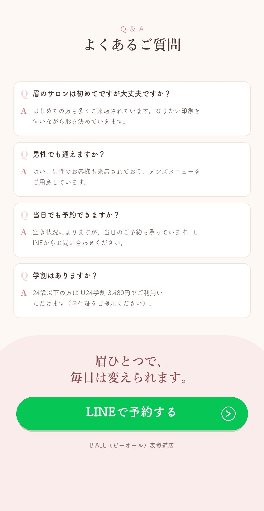

眉が決まると、今日が、うまくいく。
街の小さなアイブロウサロン。骨格から、あなたに似合う眉へ。骨格から似合わせ、完全予約制、メンズ歓迎、当日予約OK。はじめての方はアイブロウWAX 3,980円（税込）、通常5,480円。学生の方はU24学割3,480円（学生証提示）。

こんなお悩み、ありませんか？
毎朝の「なんか違う」は、眉のせいかもしれません。毎朝、眉を描くのに時間がかかる。左右の形がどうしてもそろわない。自分に似合う形がわからない。一度失敗すると、生えるまで戻せない。

B:ALL が選ばれる3つの理由
眉の形は流行ではなく骨格で決まります。目の位置・眉骨・輪郭から、その人に合う形を設計します。完全予約制の個室サロンなので、人目を気にせずじっくり相談できます。男性メニューとU24学割もご用意しています。

はじめての方の施術の流れ
カウンセリングでなりたい印象と普段のメイクを伺います。目の位置と骨格を測り、形をご提案します。ご納得いただいた形に整え、最後にご自宅でのお手入れ方法をお伝えします。

小さな、プライベートサロン
完全予約制です。当日のご予約もLINEから承っています。営業時間は現在確認中です。

よくあるご質問
はじめての方も多くご来店されています。男性のお客様も来店されており、メンズメニューをご用意しています。空き状況によりますが当日のご予約も承っています。24歳以下の方はU24学割3,480円でご利用いただけます。
